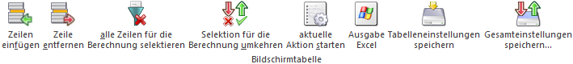

Über die Tabelle des Registers "Aktionsplan" erfolgt die Anzeige aller bereits definierten Termin dargestellt. Diese können überarbeitet oder neue Termine erfasst werden.

Die Tabelle "Terminübersicht" bietet folgende Funktionen…
ü Anzeige aller bereits erfassten Termine
ü Überarbeitung von Terminen (z.B. Spalte "Aktion")
ü Neuanlage von Terminen (Tabellenbutton "Zeile einfügen")
ü Neuberechnung der Kalendereinträge zur Duplizierung (Termine werden anhand Intervall und Rhythmus gebildet)
… wobei folgende Spalten zur Verfügung stehen:
Ø Aktion
In dieser Spalte wird die Variante der Belegduplizierung dargestellt und kann angepasst werden:
ü Kundenliste
Ein Quellbeleg
eines Kunden / Lieferanten / Interessenten wird auf eine beliebige Zahl von
Zielkunden / -lieferanten / -interessenten dupliziert. Die Definition von
Quellbeleg und Zielkonten findet über das Programm Autobeleg - Kundenliste statt.
ü Laufnummer
Die Duplizierung
erfolgt für alle Personenkonten bzw. Interessenten, welche einen Ursprungsbeleg
mit der hier zugewiesenen Laufnummer besitzen.
ü Termin
Die Duplizierung erfolgt
für alle Belege, denen der Termin zugeordnet wurde. Dieses kann im Bereich Terminzuweisung des
Autobeleg-Assistenten erfolgen oder manuell (siehe Exkurs - Verbindung eines Termins mit
einem Beleg).
Ø Quelle
Handelt es sich um die Aktion "Kundenliste", so wird an dieser Stelle die entsprechende Kundenliste dargestellt bzw. hinterlegt. Bei "Laufnummer" die zugewiesene Laufnummer.
Ø letztes Datum
Hier wird das Intervalldatum der letzten Duplizierung angezeigt.
Beispiel
Eine Rechnung soll immer am 05. eines Monats dupliziert werden. Im September findet dich Duplizierung als solches am 07. statt. Im Feld "letztes Datum" wird der 05.09 angezeigt.
Ø Bemerkung
An dieser Stelle wird die Terminbemerkung hinterlegt.
Ø Zeilennr
Die Zeilennummer verbindet den Aktionsplan mit einem Beleg. Diese Nummer wird benötigt, wenn unmittelbar aus der Anlage des Quellbeleges auf einen Termin verwiesen werden soll.
Ø Rechnen
Bei Anwahl des Buttons "selektiere Termine neu berechnen" werden all jene Termine neu berechnet, welche an dieser Stelle eine aktivierte Checkbox haben.
Beispiel
Es wurde im Jahr 2025 eine Aktion hinterlegt, die jeden Monat bestimmte Belege duplizieren soll. Da kein Ende der Aktion abzusehen ist, wurde "kein Enddatum" bei der Termindefinition hinterlegt. Die Einstellung "kein Enddatum" würde hier bedeuten, dass die Aktion endlos oft stattfinden soll - daher legt die WinLine die notwendigen Termine nur bis zum Ende des Wirtschaftsjahres an (um eine Endlosschleife zu vermeiden).
Nach dem Jahreswechsel (z.B. ins Jahr 2026) gibt es daher keine Einträge im Kalender für diese Termine.
Wenn nun die Checkbox "Rechnen" im Aktionsplan für diesen Eintrag aktiviert wird, dann rechnet das Programm den Aktionsplan automatisch aufgrund der Einstellung im Termin nach und generiert alle daraus resultierenden Kalendereinträge für das aktuelle Wirtschaftsjahr.
Ø Belegvorlage
Sollen während der Duplizierung des Quellbelegs Veränderungen vorgenommen werden (d.h. Zielbeleg soll sich von Quellbeleg unterscheiden), so kann dieses mit Hilfe einer Belegvorlage erfolgen. An dieser Stelle kann dem Termin eine fixe Vorlage zugewiesen werden.
Hinweis
Die Belegvorlage des Termins hat immer Vorrang vor der im Programm Autobeleg starten hinterlegten Vorlage!
Tabellenbuttons
